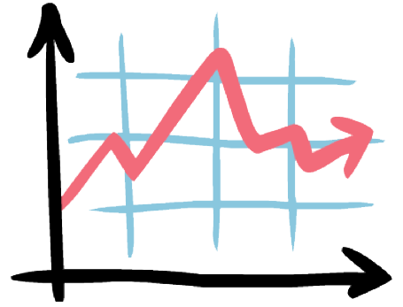

Ce faci? Ce să faci? Ce trebuie să faci? Cele mai întrebătoare întrebări din toate
întrebările întrebătoare pe lume. Ce faci când nu ai ce face?
Corect!
Întrebi pe cineva ce face. Daca nu ai ce face, ca și 87,62% din toate speciile
umane din jurul tău, atunci mai jos poți să scrii ce faci, poți să comunici cu alți indivizi care la
fel ca tine nu au ce face. Scrie ce faci dacă nu ai ce face.

După datele din statistică, s-a făcut concluzia că întrebarea "ce
faci?" este cea mai populară întrebare
în timpul unui dialog dintre două sau mai multe persoane.